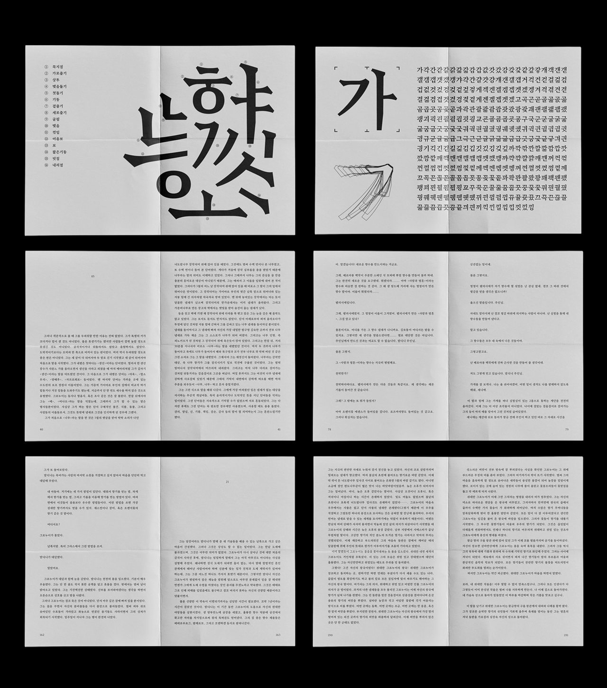
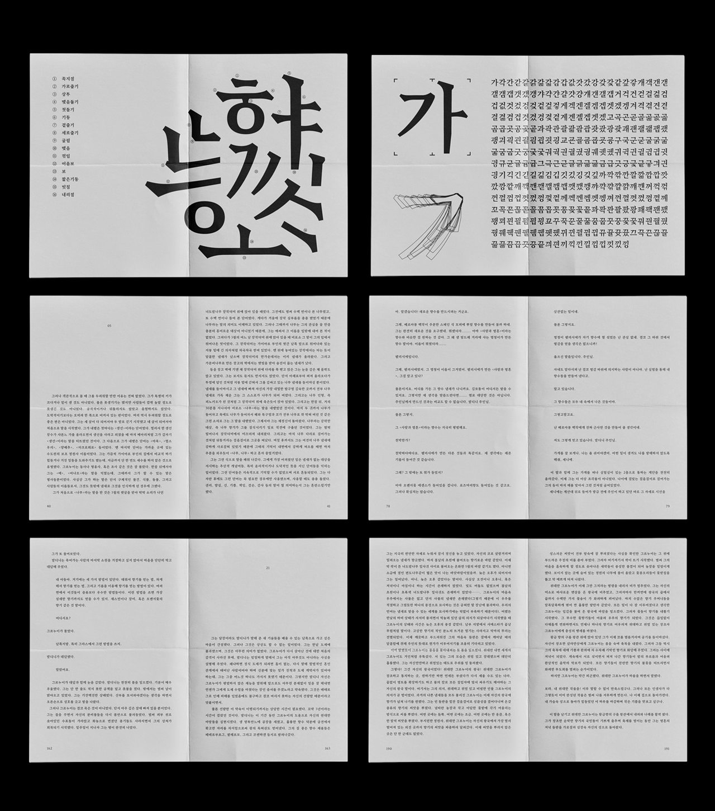
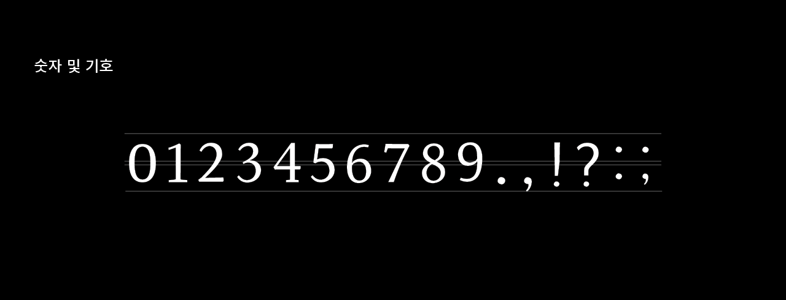
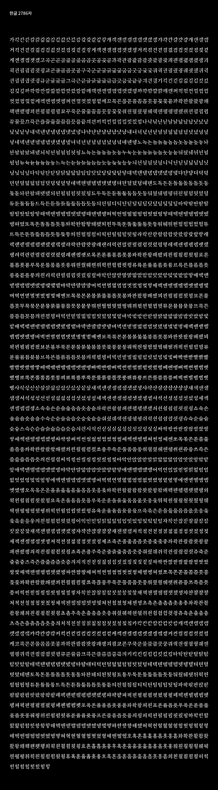
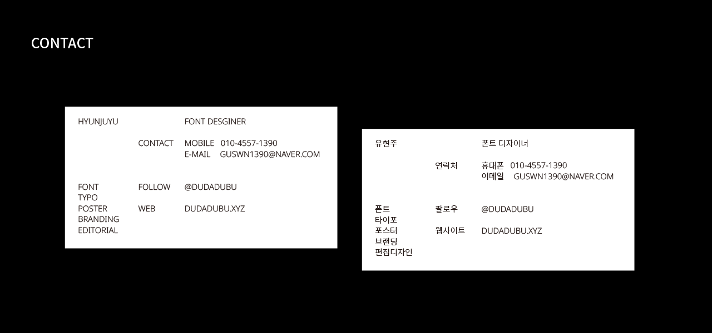
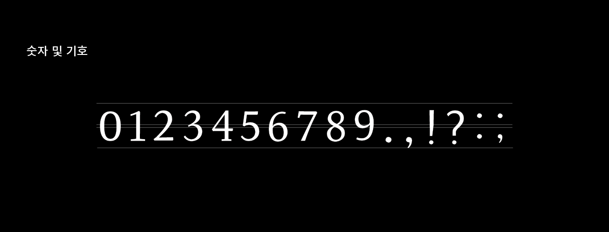
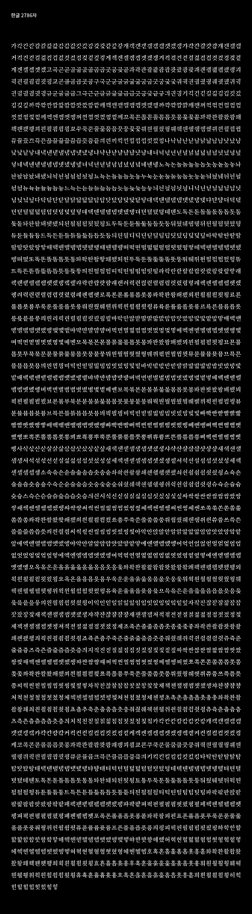
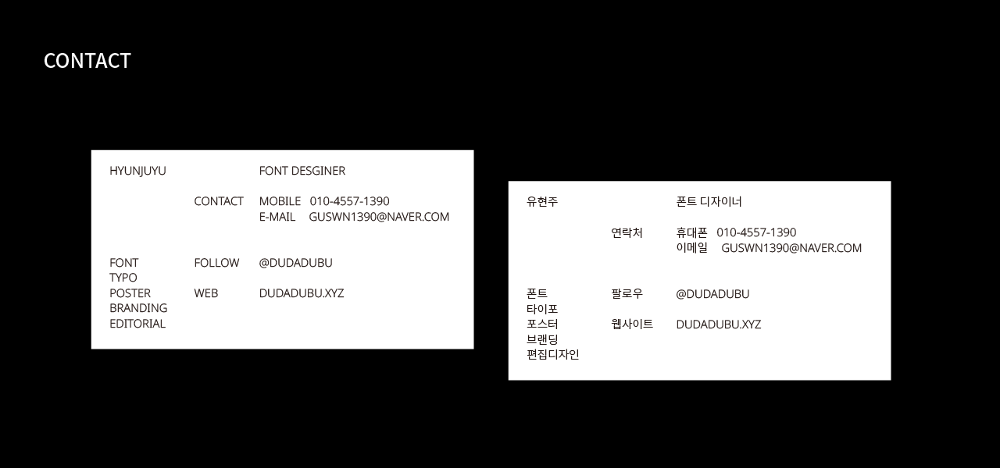

 





탄명조 tan serif
유현주
https://dudadubu.myportfolio.com/
https://www.instagram.com/dudadubu/
모든 그래픽디자인은 글자에 대한 이해로부터 시작한다고 생각합니다. 문자는 어떠한 매체보다도 확실하고 분명하게 의미를 전달할 수 있으며, 그러한 글자와 글을 다루고 이해하는 것이 모든 디자인의 기반이 되어야 한다고 믿습니다.
탄명조는 소설 향수에 등장하는 [무취인간] 단어로 레터링을 시작해 파생된 서체입니다. 단어의 어감을 고려해 강한 인상을 주도록 돌기에 가파른 기울기와 곡선을 함께 사용했습니다. 서체 파생 후 무게와 분위기를 고려해 투박하면서도 날카로운 외형을 닮은 숯을 떠올려 ‘탄’ 이라는 이름을 부여했습니다. 이 서체는 본문용으로 제작되었으며, 현재는 하나의 무게로 제작되었지만 이후 추가 작업을 통해 총 2종의 세체로 이루어진 패밀리로 거듭날 예정입니다.
All graphics start from an understanding of typography. I believe that letters can convey meaning more clearly and obviously than any other media and that handling and understanding them should be the basis for all designs.
Tan serif is a typeface derived from lettering as the word 무취인간 in novel [Perfume]. A combination of steep slopes and curves is used to make a strong impression considering the tone of the word. After the typeface was derived, the name ‘Tan’ was came from the thought of charcoal that resembles a rough and sharp appearance, considering its weight and atmosphere. The typeface was made for the text and is now made of one weight, but will be added to the family of two types of weight.